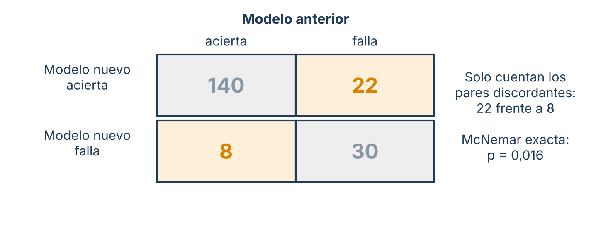
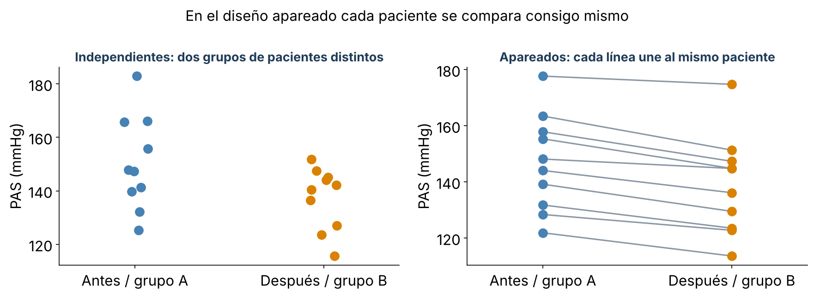
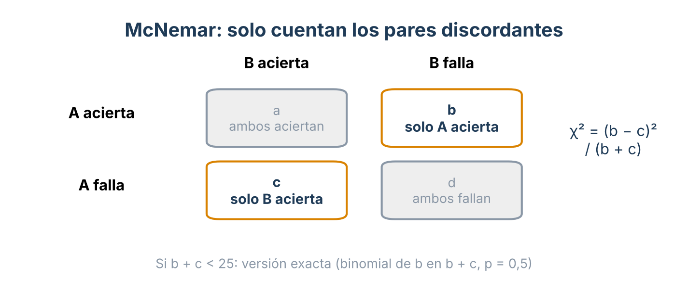
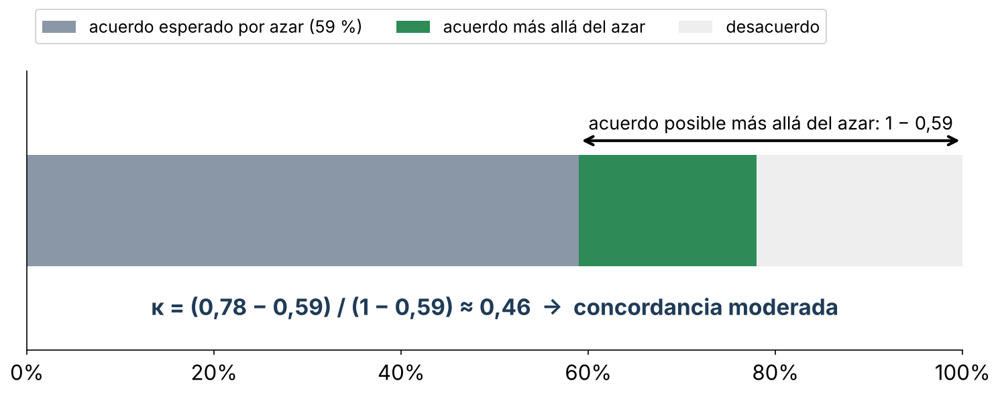
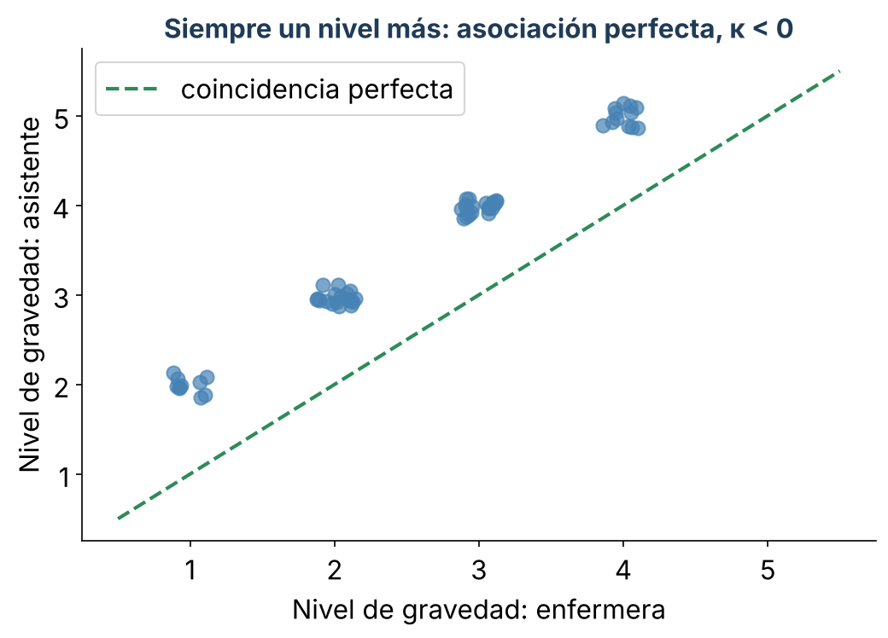

Bioestadística (1964) · Grado en Medicina · Curso 2027-2028
Tema 240Análisis de datos apareados y de concordancia: prueba de McNemar e índice kappa de Cohen
Módulo 5. Generalización de conclusiones
Evaluación: el examen del Módulo 5 se hace con Colab. Practica ejecutando e interpretando cada análisis.
Fernando Borrás Rocher · Universidad Miguel Hernández de Elche · CC BY 4.0
Objetivos de aprendizaje
Al terminar esta sesión serás capaz de:
- Reconocer cuándo dos proporciones proceden de datos apareados (los mismos pacientes, las mismas preguntas o pares emparejados).
- Aplicar e interpretar la prueba de McNemar para comparar dos proporciones apareadas.
- Distinguir asociación, acuerdo y concordancia más allá del azar.
- Calcular e interpretar el índice kappa de Cohen y su versión ponderada para escalas ordinales.
- Reconocer las limitaciones de kappa cuando la prevalencia es extrema.
Cómo usar esta presentación
Usa el selector de arriba para dar el tema en una sesión completa o en dos sesiones intercaladas.
🎓 Sesión de clase magistral
- 1. Caso clínico de partida 5 min
- 2. Conceptos clave 10 min
- 5. Autoevaluación 5 min
Explica los conceptos, haz la pausa activa y cierra con las ideas clave.
💻 Sesión de Colab
- 3. Demostración: McNemar y kappa 20 min
- 4. Práctica en la app Bioestadística 10 min
- 5. Autoevaluación 5 min
Cada estudiante abre su copia del cuaderno, predice el resultado y después ejecuta la celda.
Teclas: ← → para pasar · N notas del profesor · M cambiar de modo · F pantalla completa · Esc índice.
1. Caso clínico de partida
Dos modelos de IA, los mismos 200 casos

- Los casos en que aciertan (o fallan) los dos no dicen cuál es mejor.
- McNemar solo compara los pares discordantes: 22 frente a 8.
2. Conceptos clave
2.1 Datos apareados

Los datos son apareados cuando cada observación de un grupo tiene una pareja natural en el otro:
- El mismo paciente antes y después de una intervención.
- Dos pruebas diagnósticas aplicadas a los mismos pacientes.
- Dos modelos de IA evaluados con las mismas preguntas.
- Casos y controles emparejados por edad y sexo.
Analizarlos como independientes desperdicia información y da resultados incorrectos.
2. Conceptos clave
2.2 La prueba de McNemar

Con dos resultados binarios apareados, la tabla se construye con los pares:
| Modelo B acierta | Modelo B falla | |
|---|---|---|
| Modelo A acierta | a (ambos aciertan) | b (solo A acierta) |
| Modelo A falla | c (solo B acierta) | d (ambos fallan) |
Los pares concordantes (a y d) no dicen nada sobre cuál es mejor. La prueba solo usa los pares discordantes b y c. Si $H_0$ es cierta (las dos proporciones son iguales), b y c deberían ser parecidos:
$$\chi^2_{McNemar} = \frac{(b - c)^2}{b + c}$$
Con pocos pares discordantes (b + c < 25), usa la versión exacta. Es una prueba binomial de b frente a b + c con p = 0,5.
2. Conceptos clave
2.3 Acuerdo y concordancia: el índice kappa
Kappa: el acuerdo que no se debe al azar

- Kappa = (acuerdo observado − acuerdo esperado por azar) / (1 − acuerdo esperado).
- En escalas ordinales (niveles de triaje), kappa ponderada.
2. Conceptos clave
2.4 Asociación no es concordancia
Asociación perfecta, concordancia nula

- Si un observador puntúa siempre un nivel más que otro, están perfectamente asociados y nunca coinciden.
- La ji cuadrado mide asociación; kappa, concordancia.
Pausa activa
Piensa 30 segundos, comenta con quien tienes al lado y vota.
Dos pruebas de cribado se aplican a los mismos 300 pacientes. ¿Cómo comparas su sensibilidad?
En la sesión de Colab
Lo que acabas de ver se comprueba con datos en el cuaderno del Tema 240.
- Abre el cuaderno y guarda tu copia: Archivo → Guardar una copia en Drive.
- Ejecuta la celda de configuración.
- Ve a la demostración y predice cada resultado antes de ejecutar.
3. Demostración: McNemar y kappa
3.1 Dos modelos con los mismos 200 casos
▶ En tu cuaderno: 3.1 Dos modelos con los mismos 200 casos. Antes de ejecutar, escribe qué esperas obtener.
import numpy as np
import pandas as pd
from scipy import stats
rng = np.random.default_rng(seed=240)
n = 200
# Resultado de cada caso (True = acierto). Pares: 140 aciertan ambos, 22 solo el nuevo,
# 8 solo el anterior y 30 fallan ambos
nuevo = np.array([True] * 140 + [True] * 22 + [False] * 8 + [False] * 30)
anterior = np.array([True] * 140 + [False] * 22 + [True] * 8 + [False] * 30)
etiqueta = {True: "Sí", False: "No"}
tabla = pd.crosstab(pd.Series(nuevo, name="Nuevo acierta").map(etiqueta),
pd.Series(anterior, name="Anterior acierta").map(etiqueta))
tabla = tabla.loc[["Sí", "No"], ["Sí", "No"]]
print(tabla, "\n")
print(f"Exactitud: nuevo {nuevo.mean():.1%} · anterior {anterior.mean():.1%}")from statsmodels.stats.contingency_tables import mcnemar
b = tabla.loc["Sí", "No"] # solo acierta el nuevo
c_ = tabla.loc["No", "Sí"] # solo acierta el anterior
print(f"Pares discordantes: solo el nuevo acierta {b} · solo el anterior acierta {c_}")
exacta = mcnemar(tabla.to_numpy(), exact=True)
asintotica = mcnemar(tabla.to_numpy(), exact=False, correction=True)
print(f"McNemar exacta: p = {exacta.pvalue:.4f}")
print(f"McNemar ji cuadrado (con corrección de continuidad): χ² = {asintotica.statistic:.2f}, p = {asintotica.pvalue:.4f}")3. Demostración: McNemar y kappa
3.2 El error de ignorar el apareamiento
▶ En tu cuaderno: 3.2 El error de ignorar el apareamiento. Antes de ejecutar, escribe qué esperas obtener.
from statsmodels.stats.proportion import proportions_ztest
z, p_indep = proportions_ztest([nuevo.sum(), anterior.sum()], [n, n])
print(f"Prueba z como si fueran independientes: p = {p_indep:.4f}")
print(f"Prueba de McNemar (correcta): p = {exacta.pvalue:.4f}")Si se tratan los datos como independientes, el valor p sale mucho mayor. La prueba z trata como «ruido» la variabilidad entre casos fáciles y difíciles. En el diseño apareado esa variabilidad se anula, porque cada caso se compara consigo mismo. El diseño apareado es más potente, siempre que se analice como tal.
Cómo se comunica: «El modelo nuevo acertó en el 81 % de los casos y el anterior en el 74 % (n = 200 casos comunes). De los 30 casos en que discreparon, el nuevo acertó en 22 y el anterior en 8 (McNemar exacta, p = 0,016)».
3. Demostración: McNemar y kappa
3.3 Acuerdo entre la enfermera y el asistente
▶ En tu cuaderno: 3.3 Acuerdo entre la enfermera y el asistente. Antes de ejecutar, escribe qué esperas obtener.
Simulamos 150 pacientes con dos clasificaciones: «urgente» o «no urgente».
from sklearn.metrics import cohen_kappa_score
urgente_real = rng.random(150) < 0.25
enfermera = np.where(rng.random(150) < 0.88, urgente_real, ~urgente_real)
asistente = np.where(rng.random(150) < 0.86, urgente_real, ~urgente_real)
tabla_acuerdo = pd.crosstab(pd.Series(enfermera, name="Enfermera: urgente"),
pd.Series(asistente, name="Asistente: urgente"))
print(tabla_acuerdo, "\n")
po = (enfermera == asistente).mean()
pe = enfermera.mean() * asistente.mean() + (1 - enfermera.mean()) * (1 - asistente.mean())
kappa_manual = (po - pe) / (1 - pe)
print(f"Acuerdo observado Po = {po:.3f}")
print(f"Acuerdo esperado por azar Pe = {pe:.3f}")
print(f"Kappa a mano = {kappa_manual:.3f} · con scikit-learn = {cohen_kappa_score(enfermera, asistente):.3f}")Con las prevalencias de cada clasificador, el azar explicaría por sí solo un 59 % de coincidencias. El 78 % de acuerdo se convierte en κ = 0,47: concordancia solo moderada. En 33 de 150 pacientes, el asistente y la enfermera discrepan sobre si el caso es urgente.
3. Demostración: McNemar y kappa
3.4 Kappa con su intervalo de confianza
▶ En tu cuaderno: 3.4 Kappa con su intervalo de confianza. Antes de ejecutar, escribe qué esperas obtener.
from statsmodels.stats.inter_rater import cohens_kappa
resultado = cohens_kappa(tabla_acuerdo.to_numpy())
print(f"κ = {resultado.kappa:.3f} (IC 95 %: {resultado.kappa_low:.3f} a {resultado.kappa_upp:.3f})")3. Demostración: McNemar y kappa
3.5 Kappa ponderada: los cinco niveles de triaje
▶ En tu cuaderno: 3.5 Kappa ponderada: los cinco niveles de triaje. Antes de ejecutar, escribe qué esperas obtener.
El Sistema Español de Triaje y el Manchester usan cinco niveles (1 = resucitación, 5 = no urgente). Un desacuerdo entre los niveles 2 y 3 es menos grave que uno entre 1 y 5.
nivel_real = rng.choice([1, 2, 3, 4, 5], size=150, p=[0.03, 0.12, 0.35, 0.35, 0.15])
def clasificar(nivel, error):
salto = rng.choice([-1, 0, 1], size=len(nivel), p=[error / 2, 1 - error, error / 2])
return np.clip(nivel + salto, 1, 5)
enfermera_n = clasificar(nivel_real, 0.30)
asistente_n = clasificar(nivel_real, 0.35)
print(pd.crosstab(pd.Series(enfermera_n, name="Enfermera"), pd.Series(asistente_n, name="Asistente")), "\n")
print(f"Acuerdo exacto: {(enfermera_n == asistente_n).mean():.1%}")
print(f"Kappa sin ponderar: {cohen_kappa_score(enfermera_n, asistente_n):.3f}")
print(f"Kappa ponderada lineal: {cohen_kappa_score(enfermera_n, asistente_n, weights='linear'):.3f}")
print(f"Kappa ponderada cuadrática: {cohen_kappa_score(enfermera_n, asistente_n, weights='quadratic'):.3f}")Casi todos los desacuerdos son de un solo nivel, así que la kappa ponderada es mucho mayor que la simple. En escalas ordinales se debe dar la ponderada e indicar el tipo de ponderación.
Ampliación
Ampliación: la paradoja de kappa
Con una prevalencia muy extrema, kappa puede ser baja aunque el acuerdo sea altísimo:
# 200 radiografías; casi todas normales
paradoja = np.array([[2, 4],
[5, 189]])
acuerdo = np.trace(paradoja) / paradoja.sum()
print(f"Acuerdo observado: {acuerdo:.1%}")
print(f"κ = {cohens_kappa(paradoja).kappa:.3f}")Con un 95,5 % de acuerdo, kappa es solo discreta, porque casi todo el acuerdo se esperaba por azar al ser casi todas normales. Por eso conviene publicar la tabla completa y el acuerdo observado, además de kappa. Valora también el acuerdo por separado en positivos y en negativos.
Ampliación
Ampliación: McNemar antes y después
En 120 hipertensos se registra si tienen la presión arterial controlada (sí/no) antes y 6 meses después de una intervención educativa de enfermería.
# Después: controlado Después: no controlado
antes_despues = np.array([[48, 6], # Antes: controlado
[23, 43]]) # Antes: no controlado
r = mcnemar(antes_despues, exact=True)
print(f"Controlados antes: {antes_despues[0].sum() / 120:.1%} · después: {antes_despues[:, 0].sum() / 120:.1%}")
print(f"Mejoran: {antes_despues[1, 0]} · empeoran: {antes_despues[0, 1]} · McNemar exacta: p = {r.pvalue:.4f}")Ojo: sin grupo control, la mejora puede tener tres causas. La intervención, la regresión a la media (Tema 130) u otros cambios del período. McNemar dice que el cambio no es atribuible al azar, no que lo cause la intervención.
Ampliación
Ampliación: errores frecuentes
Comparar proporciones apareadas con la ji cuadrado o la z de independientes.
Medir la concordancia con el porcentaje de acuerdo o con la ji cuadrado. Usa kappa.
Usar kappa simple en escalas ordinales. Usa la ponderada.
Dar kappa sin la tabla, cuando la prevalencia es extrema.
Confundir concordancia con validez: dos observadores pueden coincidir mucho y equivocarse los dos. La validez se mide frente a un patrón de referencia (Tema 160).
4. Práctica en la app Bioestadística
Abre la unidad 240 de la app Bioestadística y completa sus misiones:
- Misión básica (sin asistente): decidir si seis diseños producen datos apareados o independientes, y calcular a mano una kappa.
- Misión clínica (con pistas): comparar con McNemar dos pruebas de cribado aplicadas a los mismos pacientes y medir su concordancia.
- Misión reto (con asistente): usar los informes de las unidades anteriores. Comparar con McNemar tu acierto en el primer intento y tras la pista del asistente.
Al terminar, exporta el informe de la unidad.
5. Autoevaluación
Responde sin asistente.
5. Autoevaluación
Elige una opción: verás la explicación.
Dos pruebas de cribado se aplican a los mismos 300 pacientes. ¿Cómo comparas su sensibilidad?
En una tabla de McNemar, a = 60, b = 15, c = 5, d = 20. ¿Qué casillas usa la prueba?
Dos radiólogos coinciden en el 85 % de las radiografías; el acuerdo esperado por azar es del 70 %. ¿Cuánto vale kappa?
Un médico clasifica siempre un nivel por encima de otro en una escala de 1 a 5. ¿Qué ocurre?
Para medir la concordancia entre dos observadores en una escala de gravedad de cinco niveles, ¿qué usas?
Ideas clave
- Mismos pacientes o mismas preguntas: datos apareados.
- McNemar compara dos proporciones apareadas usando solo los pares discordantes.
- El apareamiento aumenta la potencia, pero solo si se analiza como tal.
- Kappa mide la concordancia corregida por el azar; en escalas ordinales, kappa ponderada.
- Asociación no es concordancia, y concordancia no es validez.
Glosario
| Término | Definición |
|---|---|
| Datos apareados | Observaciones en las que cada valor de un grupo tiene una pareja en el otro |
| Pares discordantes | Pares en los que los dos resultados difieren |
| Prueba de McNemar | Contraste de dos proporciones apareadas basado en los pares discordantes |
| Acuerdo observado ($P_o$) | Proporción de casos en que coinciden dos clasificaciones |
| Acuerdo esperado ($P_e$) | Proporción de coincidencias que se esperaría por azar |
| Índice kappa de Cohen | Medida de concordancia entre dos observadores corregida por el azar |
| Kappa ponderada | Versión de kappa que pondera los desacuerdos según su distancia en una escala ordinal |
| Paradoja de kappa | Valor bajo de kappa con acuerdo alto, cuando la prevalencia es extrema |
Para saber más
- McNemar Q. Note on the sampling error of the difference between correlated proportions or percentages. Psychometrika. 1947;12(2):153-157. doi:10.1007/BF02295996
- Landis JR, Koch GG. The measurement of observer agreement for categorical data. Biometrics. 1977;33(1):159-174. doi:10.2307/2529310
- Feinstein AR, Cicchetti DV. High agreement but low kappa: I. The problems of two paradoxes. J Clin Epidemiol. 1990;43(6):543-549. doi:10.1016/0895-4356(90)90158-L